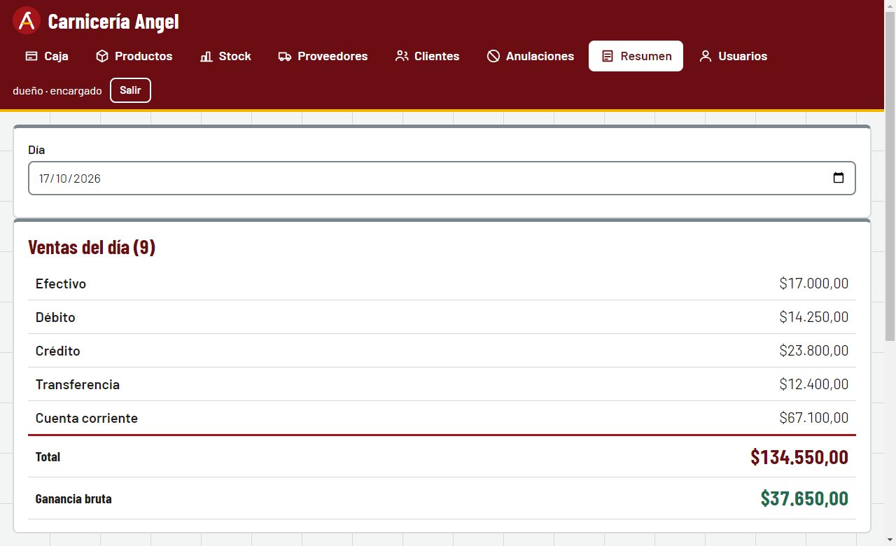

CASO 01 · Sistema de escritorio
Caja y stock
Para Carnicería Angel, una carnicería con almacén. Funciona completa sin internet en una sola computadora y se entrega como una carpeta que se abre con doble clic.
- Rol
- Requisitos, diseño, desarrollo, pruebas y entrega
- Stack
- PHP · SQLite · Electron · JavaScript
- Una venta se guarda entera o no se guarda (a prueba de cortes de luz).
- Cinco medios de pago, incluida la cuenta corriente del cliente.
- Dos roles: el cajero nunca recibe costos ni saldos, porque el servidor no los envía.
- Copia automática de la base cada vez que se abre.
